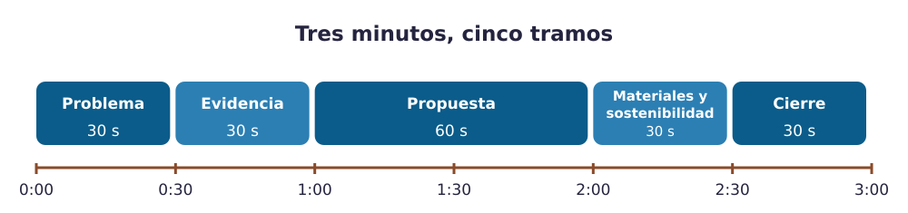
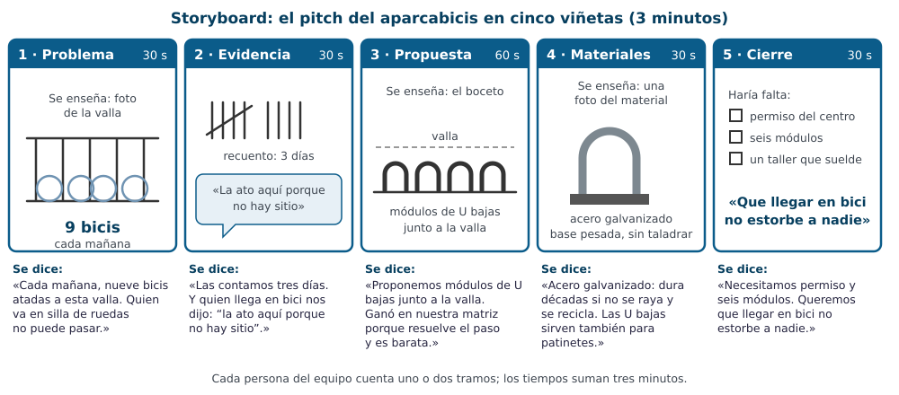

Contenido
Qué vas a aprender
A contar vuestra propuesta en tres minutos de forma que se entienda, convenza y respete a todo el mundo. Un pitch no es leer el dossier en voz alta: es elegir qué contar y cómo.
La estructura de un pitch de tres minutos

Ampliar figura (nueva pestaña)
| Tramo | Qué contáis | Truco |
|---|---|---|
| 1. El problema (≈ 30 s) | Qué necesidad habéis visto y a quién afecta. | Empezad con una imagen o un dato, no con «hola, somos el equipo…». |
| 2. La evidencia (≈ 30 s) | Qué observasteis: fotos, recuentos, lo que dijo la gente. | Una foto y un número valen más que tres frases. |
| 3. La propuesta (≈ 60 s) | Qué proponéis, cómo es (boceto) y por qué la elegisteis frente a las otras. | Enseñad el boceto; nombrad la matriz de decisión en una frase. |
| 4. Materiales y sostenibilidad (≈ 30 s) | De qué está hecha y por qué; qué pasa al final de su vida; quién puede usarla. | Un material, una razón. |
| 5. El cierre (≈ 30 s) | Qué necesitaríais para hacerla realidad y una frase que se recuerde. | Terminad mirando al público, no a la pantalla. |
Un pitch de ejemplo, viñeta a viñeta
Antes de escribir el vuestro, mira cómo quedaría el pitch del aparcabicis dibujado como un storyboard: una viñeta por tramo, con lo que se enseña y lo que se dice.

Ampliar figura (nueva pestaña)
El mismo tramo, mal contado y bien contado
| Tramo 1 mal contado | Tramo 1 bien contado |
|---|---|
| «Hola, somos el estudio Rueda Libre. Nuestro proyecto trata sobre un problema que hay en el instituto con las bicicletas, que es un problema bastante importante y que afecta a mucha gente…» | (Foto de la valla en pantalla.) «Cada mañana, nueve bicis atadas a esta valla. Dos invaden la acera, y quien va en silla de ruedas no puede pasar. Esto es lo que queremos arreglar.» |
| Empieza por el equipo, no dice qué pasa ni a quién, y gasta veinte segundos sin decir nada concreto. | Empieza con una imagen y un dato, dice a quién afecta y en menos de quince segundos ya se sabe de qué va el pitch. |
Hablar para todas las personas: lenguaje inclusivo
Un pitch se dirige a un público variado. El lenguaje que uséis dice mucho de vuestra propuesta: si habláis solo de «los usuarios» o «los profesores», media sala deja de sentirse incluida. No es una cuestión de corrección: es precisión. Algunas sustituciones fáciles:
| En vez de… | Mejor… |
|---|---|
| los alumnos, los profesores | el alumnado, el profesorado, la gente del instituto |
| los usuarios | quien lo use, las personas usuarias |
| los ingenieros, los diseñadores | el equipo de ingeniería, quienes diseñan |
| «esto es tan fácil que lo hace cualquiera» | «se puede usar sin instrucciones» |
| ejemplos siempre con el mismo tipo de persona | ejemplos variados: edades, capacidades, géneros |
Y cuidado con los estereotipos en los ejemplos: si la propuesta es un carrito para la compra, no lo presentéis pensando solo en «las madres»; si es un aparcabicis, no solo en «los chicos». Pensad en quién de verdad usará la solución.
La voz, el tiempo y el cuerpo
- Entonación: subid y bajad la voz; una frase importante se dice más despacio. Leer de un papel aplana todo: llevad una tarjeta con las palabras clave de vuestro tramo, que sirve para no perderse sin tener que leer.
- Tiempo: tres minutos son tres minutos. Ensayad con cronómetro al menos dos veces. Si os pasáis, recortad primero lo que menos ayude a entender la propuesta (muchas veces, parte de la evidencia); la propuesta es lo último que se recorta.
- Reparto: todas las personas del equipo hablan. Repartid los tramos, no las frases.
- Cuerpo: mirando al público, con las manos libres para señalar el boceto o la pantalla. De pie suele funcionar mejor, pero no es lo único que vale.
- Adaptación: si el público no es de Tecnología, cambiad la palabra técnica por su explicación («galvanizado: acero con una capa de zinc que no se oxida»).
Si te cuesta hablar en público
Puedes pedir una adaptación antes del ensayo: presentar sentado, llevar una tarjeta más completa o tener tu guion en la pantalla del portátil. Lo importante es que se te entienda y que mires al público al empezar y al acabar tu tramo. Pedirla no es hacer trampa: es preparar el pitch para que salga bien.
El apoyo visual (opcional)
Podéis apoyaros en un cartel, en los bocetos en papel o en tres a cinco diapositivas. Regla de oro: una imagen y como mucho cinco palabras por diapositiva. Nada de párrafos: si la pantalla se puede leer, el público os deja de escuchar. Si usáis diapositivas, tenedlas abiertas antes de empezar: no hay que entregarlas.
Escuchar los pitches de los demás equipos
Mientras otro equipo presenta, vuestro trabajo es escuchar y anotar. Al terminar cada pitch, cada equipo escribe para el que ha presentado dos estrellas y un deseo: dos cosas que han funcionado y una que mejorar. Se entregan en papel al equipo. Hablar bien en público se aprende también viendo hablar a los demás.
Ejemplo: dos estrellas y un deseo bien escritos
- Estrella: «La foto de la valla al empezar: se entendía el problema sin explicarlo».
- Estrella: «Dijisteis por qué la U baja sirve también para patinetes».
- Deseo: «En la propuesta hablasteis muy deprisa; nos faltó ver el boceto más tiempo».
Cada frase dice algo concreto que el equipo puede repetir o cambiar. «Muy bien» o «más alto» no ayudan: no dicen qué ni dónde.
Ahora inténtalo
Actividad 9 · Guion y ensayo
- Escribid el guion por tramos (una tarjeta por tramo, cinco palabras clave cada una) y repartidlos.
- Revisad el guion con la tabla de lenguaje inclusivo: cambiad lo que haga falta.
- Preparad el apoyo visual si lo vais a usar.
- Ensayad dos veces con cronómetro; la segunda, delante de otro equipo, que os da dos estrellas y un deseo.
El pitch se prepara en equipo y cada persona cuenta su tramo. La nota es personal: cada persona recibe la suya según cómo cuenta su parte. Se valora en directo en la tarea de Moodle Pitch de la propuesta (no hay que subir nada). Cuenta la estructura, la claridad, el tiempo y el lenguaje inclusivo.
Verdadero o falso
Revisa tu guion con estas afirmaciones antes de ensayar.
00:00: